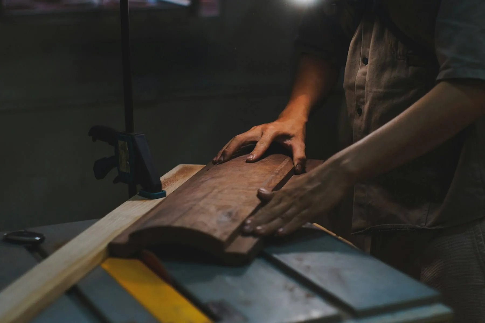
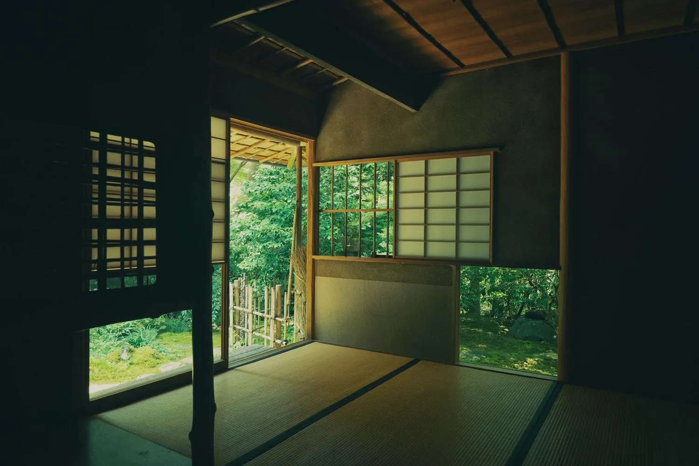
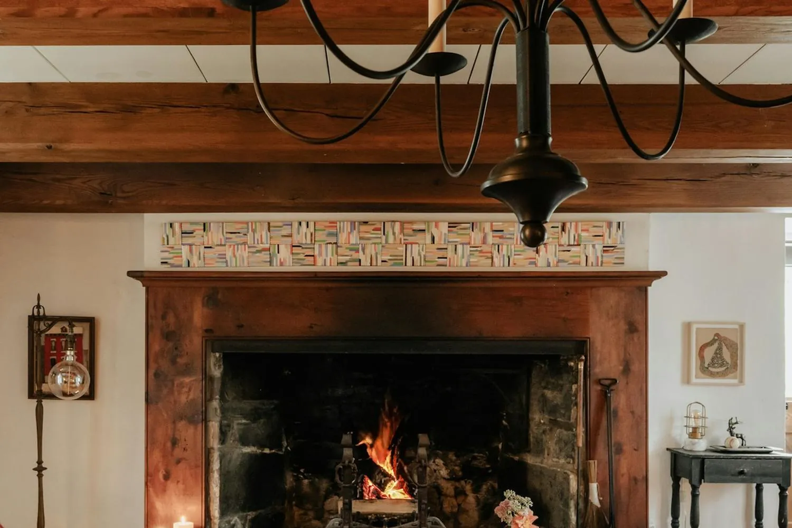
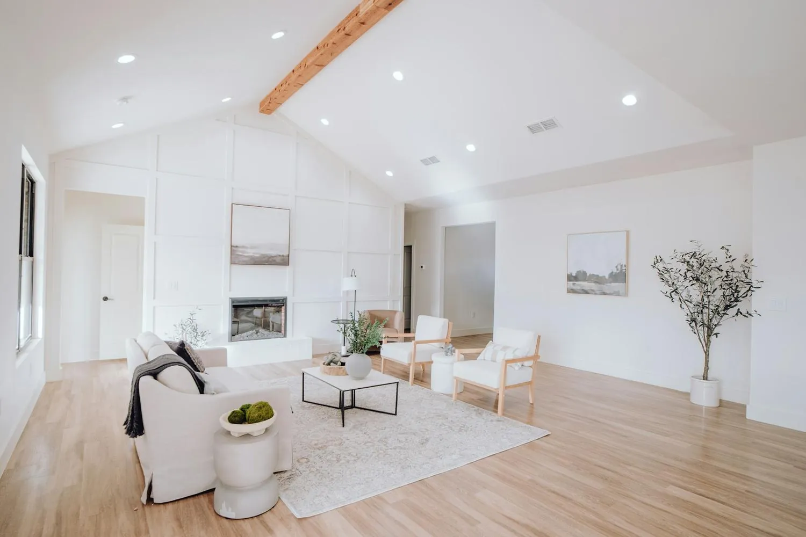
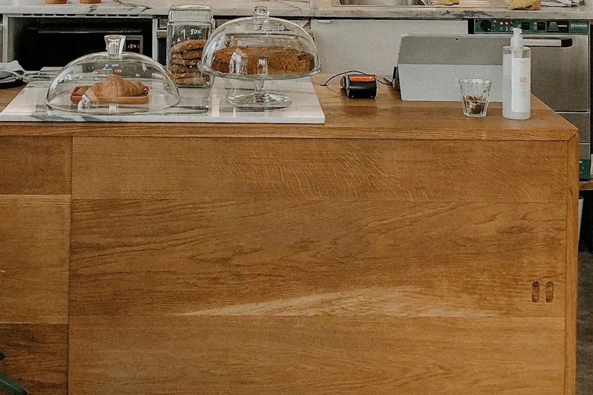
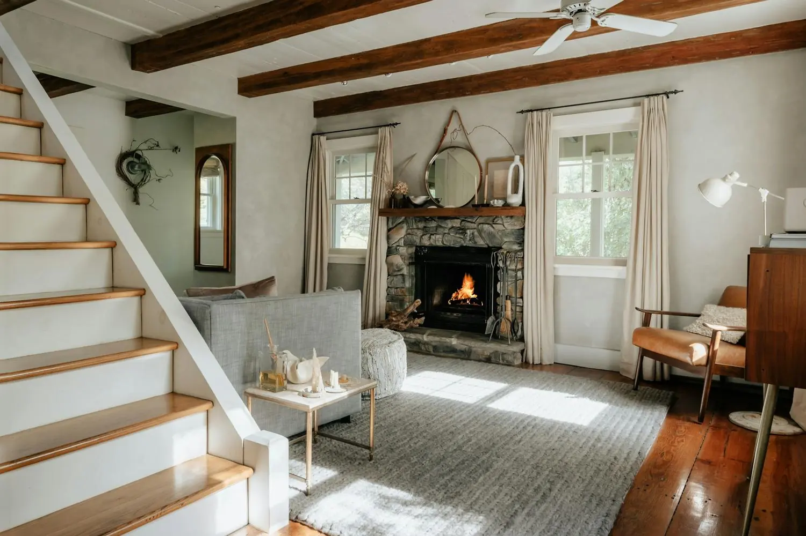

建てた大工が、30年点検に来る。
埼玉の西部で41年。地元の杉とひのきで、木の家の新築とリノベーションをしている工務店です。
描く。刻む。通う。
図面を描く人と、木を刻む人が、同じ事務所にいます。
家を建てるのは、社員として働く6人の大工。設計の打ち合わせにも同席するので、「この棚はあと5cm低く」といった話が、そのまま現場に届きます。
建てたあとは、30年目まで点検に通います。家の不調にいちばん早く気づけるのは、その家を建てた大工だと考えているからです。
数字で見る、ののき工務店
41年
地域で家を建ててきた年数
6人
社員として働く自社の大工
30年
引き渡し後の定期点検の期間
42件
2025年度に手がけた新築とリノベーション
Services
網戸1枚の張り替えから、木の家の新築まで。社員の大工が伺います。
施工事例
3件を表示しています

改修前改修後
写真の上で左右に動かすと、改修前と改修後を見比べられます。
築42年の平屋に、薪ストーブの居間をつくる
- 延床面積
- 86㎡
- 工期
- 4か月
- 費用
- 1,850万円（税込）
細かく分かれていた4つの部屋をひとつにまとめ、隠れていた梁を見せる天井にしました。

土間から庭へ抜ける、共働き4人家族の家
- 延床面積
- 102㎡
- 工期
- 5か月
- 費用
- 3,200万円（建物本体・税込）
玄関の土間を広く取り、ベビーカーと自転車をそのまま置けるようにしました。土間の先の窓から、そのまま庭に出られます。

駅前のパン屋の改装
- 床面積
- 38㎡
- 工期
- 3週間（店は休まず、定休日の6日間で工事）
杉の一枚板のカウンターと、パンの量に合わせて高さを変えられる棚を造りました。
家づくりの流れ
01
ご相談・見学会
まずは見学会か事務所で、お考えをお聞きします。ご相談は無料です。
02
敷地の調査とプランのご提案
敷地やいまの家を見せていただき、約1か月でプランと概算の金額をお出しします。
03
お見積もりとご契約
金額の内訳を1項目ずつご説明します。納得いただけるまで契約はしません。
04
詳しい設計
約2か月。打ち合わせには、実際に建てる大工も同席します。
05
着工から完成
新築で約5か月。上棟の日は、ご家族も現場にお越しいただけます。
06
お引き渡しと定期点検
1年目から30年目まで、建てた大工が点検に伺います。
完成見学会
お施主様のご厚意で、お引き渡し前の家をお借りして開く見学会です。1組ずつの予約制で、1回90分。建てた大工に直接ご質問いただけます。
2026年10月17日（土）・18日（日）
築38年の二階建てのリノベーション／埼玉県〇〇市

「何から相談すれば」の段階から、どうぞ。
新築・リノベーション・修繕、どのご相談も無料です。現地を見ないまま金額を決めることはしません。
000-000-0000
9:00〜18:00、水曜定休
会社概要
- 会社名
- 株式会社ののき工務店
- 代表者
- 代表取締役 野々木 健太（一級建築士）
- 創業
- 1985年
- 社員数
- 14名（うち大工6名）
- 所在地
- 〒000-0000 埼玉県〇〇市〇〇 0-0-0
- 電話
- 000-000-0000
- 許可・登録
- 建設業許可 埼玉県知事許可（般-00）第000000号
一級建築士事務所 埼玉県知事登録 第0000号 - 工事の範囲
- 事務所から車で40分以内